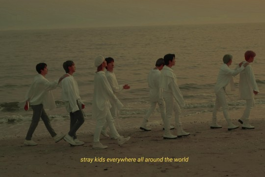

“It doesn’t matter where you’re from, who you choose to be, what age you are; it doesn’t matter,” says Bang Chan, leader of Stray Kids, to deafening cheers from an adoring Los Angeles concert crowd. “If you’re here, you’re all Stays.”
It’s a sentiment that encapsulates Stray Kids’ core message: to represent — and make music for — the outcasts, misfits, and those who stray from the expected path. This message seems to have resonated deeply with their fanbase, named STAY, who earlier this year helped rocket the group to their first No.1 on the Billboard 200 album chart. Stray Kids sold over 110,000 units of their 2022 mini-album ‘ODDINARY’ in the first week in the US alone, with around 100,000 of those accounted for by physical album sales. The octet achieved impressive digital streaming numbers too, with the 7-track mini-album gaining 8.9 million streams on Spotify just one day after its release. They also recently completed a whirlwind North American arena tour, selling out venues across the country with a projected profit of more than $16 million for 10 reported shows.Even as the accolades pour in, Stray Kids remain humble and aware of their unique position in the public eye. Their journey has been anything but easy; formed in 2017 during an eponymously named televised survival show, the group represented an unprecedented (and risky) attempt by JYP Entertainment, one of South Korea’s flagship agencies, to change the K-pop game. Their versatility and willingness to experiment is a huge asset, but it’s not the only thing that sets them apart. With 3Racha being credited as primary producers for nearly every track in their discography (and the other members contributing in recent releases), Stray Kids’ music is the most authentic representation of their identity as artists. As Changbin astutely states in the album introduction for ‘ODDINARY’ — “The music style of Stray Kids is a bit niche. I don’t think it’s popular music… but we would like to express our style (through this album). Every generation prefers a different genre. We want to approach people with music that can become a (new) standard.”
This youthful mix of ambition and accessibility has struck a chord with Stays around the world. For fans of all ages and backgrounds struggling with identity and self-perception in a world crippled by pandemics, socio-economic crises, and online negativity, Stray Kids’ message of unabashed self-confidence and open emotional expression is a beacon of hope. The members themselves take every available chance to interact with fans through various social media platforms, share personal stories, advice, and heartfelt declarations of love and support. Bang Chan is famous for his weekly live broadcasts on the Vlive app, which garner millions of views and, according to fans, are a source of great comfort to anyone going through a tough time. Felix and Lee Know are frequent users of the text-based app Bubble, where they share everything from positive affirmations to food recommendations. Hyunjin and I.N post frequently on the group’s Instagram page (which, at the time of writing, has 22.6 million followers), sharing their passions for photography and art (Hyunjin) and fashion (I.N). Seungmin likes to broadcast his vocal practices, Changbin films mini-vlogs during his down time, and Han is known for his taste in anime and movies, which he freely shares with fans. Stray Kids are also known to give Stays a glimpse into their individual personalities and group camaraderie through various kinds of online content (see: their YouTube series, 2 Kids Room). This emphasis on building a solid relationship between fan and artist is one of the factors that has made K-pop such an unstoppable force in fandom culture. It allows idols to bridge the gap between ‘creators’ and ‘consumers’ and foster a tight-knit sense of community amongst fans. Stray Kids are disarmingly honest, down-to-earth, and relatable, and have continued to make sincere efforts to connect with their fans across the globe.